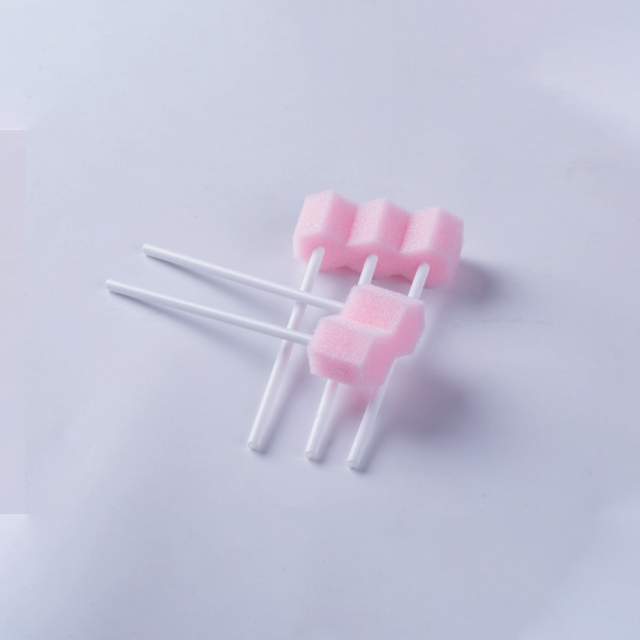

Oral care is one of the most routine yet most consequential nursing interventions in healthcare. In critical care settings, the mouth is a direct pathway to the lungs — and poor oral hygiene is a well-documented risk factor for ventilator-associated pneumonia (VAP), one of the most common and costly healthcare-associated infections. Disposable oral swab sticks are the frontline tool that makes consistent, safe oral care possible for patients who cannot brush their own teeth.
Despite their importance, oral swab sticks are frequently treated as an afterthought in procurement decisions. This article explains why they deserve more attention — and what to look for when sourcing them.
The Clinical Case for Oral Swab Sticks
Preventing Ventilator-Associated Pneumonia
VAP remains one of the leading causes of mortality in ICUs worldwide. Research consistently shows that oral colonization by respiratory pathogens is a primary driver of VAP development. When bacteria accumulate in the oral cavity, they can be aspirated into the lower respiratory tract — particularly in intubated patients, whose endotracheal tube creates a direct conduit past the body's natural airway defenses.
Regular oral care using disposable swab sticks, combined with chlorhexidine or other antiseptic solutions, significantly reduces the bacterial load in the oral cavity and the incidence of VAP. Clinical guidelines from organizations like the CDC and the Institute for Healthcare Improvement recommend structured oral care protocols as a core component of VAP prevention bundles.
Supporting Patients Who Cannot Self-Care
Oral swab sticks serve a broad patient population beyond ICU patients on ventilators:
- Stroke patients: Dysphagia and motor impairment make traditional toothbrushing difficult or unsafe due to aspiration risk.
- Post-surgical patients: After head, neck, or oral surgery, patients need gentle cleaning that doesn't disturb surgical sites.
- Elderly patients in aged care: Residents with dementia, Parkinson's disease, or general debility often cannot maintain their own oral hygiene.
- Oncology patients: Mucositis from chemotherapy and radiation makes the oral mucosa extremely fragile; soft foam swabs provide gentle cleaning without trauma.
- Consciousness-impaired patients: Those with reduced consciousness from injury, overdose, or neurological conditions require assisted oral care.
Reducing Cross-Contamination
The disposable nature of oral swab sticks is their most important feature from an infection control standpoint. Each swab is used once and discarded, eliminating the risk of cross-contamination between patients — a genuine concern with reusable oral care tools. Single-use design also means each swab can be deployed for a specific task (e.g., one swab for teeth, another for tongue) without reusing contaminated material within the same patient's mouth.
Design and Material Considerations
Foam Head Construction
The sponge or foam head is the critical contact point. Quality oral swab sticks use open-cell polyurethane foam that is soft enough to avoid mucosal damage but dense enough to retain and release fluid effectively. The foam should be securely bonded to the stick — poor adhesion can lead to foam detachment during use, which is both ineffective and potentially hazardous if the foam becomes a choking risk.
Some oral swab sticks feature textured or contoured foam surfaces that provide better mechanical cleaning action than smooth foam. These are particularly useful for removing plaque and debris from teeth and gums in patients who go extended periods without proper dental care.
Stick Material and Length
The stick (handle) is typically manufactured from polypropylene or ABS plastic. Key considerations include:
- Length: Standard oral swab sticks range from 14cm to 18cm. Longer sticks provide better reach and leverage for caregivers, especially when working with intubated patients or patients with limited mouth opening.
- Flexibility: The stick should be rigid enough for effective cleaning but slightly flexible to navigate the contours of the oral cavity without causing trauma.
- Surface texture: Some sticks feature a grooved or textured grip area for better handling, which is valuable when caregivers are wearing gloves.
Pre-Moistened vs. Dry Swabs
Oral swab sticks are available in two formats:
- Dry swabs: The caregiver applies the desired solution (saline, chlorhexidine, water, or oral care rinse) immediately before use. This format offers maximum flexibility — the same swab can be used with different solutions depending on the patient's needs.
- Pre-moistened swabs: Individually packaged with a specific solution already applied. These are convenient for rapid deployment and ensure consistent solution volume, but require stocking multiple SKUs if different solutions are needed.
For most institutional procurement scenarios, dry swabs provide the best balance of versatility, cost efficiency, and storage convenience.
Oral Care Protocols in Practice
ICU and Ventilator Care
In intensive care settings, oral care is typically performed every 2-4 hours as part of a structured VAP prevention bundle. The protocol generally involves:
- Assessing the oral cavity for lesions, bleeding, or signs of infection.
- Using suction to remove excess saliva or secretions.
- Applying an antiseptic solution (commonly 0.12% chlorhexidine gluconate) with a foam swab to clean teeth, gums, tongue, and inner cheeks.
- Using a fresh swab for each area of the mouth to prevent cross-contamination within the oral cavity.
- Documenting the care provided and any observations.
This protocol requires a steady supply of disposable oral swab sticks — often 6-12 per patient per day. Procurement planners should account for this volume when calculating annual consumption.
Aged Care and Palliative Care
In residential aged care and palliative settings, oral swab sticks serve a different but equally important purpose: maintaining comfort and dignity for residents who can no longer perform oral self-care. Regular use prevents dry mouth (xerostomia), bad breath, oral thrush, and gum disease — all of which significantly impact quality of life for elderly residents.
For palliative care patients, gentle oral care with moistened swab sticks provides comfort and maintains oral moisture when swallowing becomes difficult. This aspect of care is often undervalued but deeply appreciated by patients and families.
"Implementing a structured oral care protocol with disposable swab sticks reduced our VAP rate by 35% in the first year. It's one of the simplest interventions we've implemented — and one of the most effective." — Infection Control Nurse, General Hospital, Melbourne
Procurement Best Practices
- Calculate volume accurately. Factor in per-patient, per-use consumption (typically 6-12 swabs per oral care session), frequency of care (every 2-4 hours in ICU), and total patient days. Underestimating consumption is a common procurement error that leads to stockouts.
- Specify individual packaging. Each swab should be individually wrapped to maintain sterility and allow for single-use deployment. Bulk-packaged swabs compromise the infection control benefit.
- Request samples for evaluation. Test foam softness, adhesion between foam and stick, and overall construction quality. These tactile factors are impossible to assess from specifications alone.
- Verify manufacturing standards. ISO 13485 certification indicates a quality management system appropriate for medical device manufacturing. This is particularly important for products that come into contact with mucosal tissue.
- Consider bundled oral care kits. Some suppliers offer pre-assembled oral care kits that include swab sticks, suction tubing, gloves, and solution — streamlining bedside preparation and ensuring consistency.
Environmental and Cost Considerations
Disposable oral swab sticks are low-cost consumables — typically a fraction of a dollar per unit — but the cumulative cost across a hospital can be significant. However, this cost should be weighed against the financial impact of the infections they help prevent. A single case of VAP can cost a hospital $10,000-$40,000 in additional treatment, extended ICU stay, and regulatory penalties. Investing in quality oral care supplies is one of the highest-return infection prevention measures available.
From an environmental perspective, most oral swab sticks are made from polypropylene and polyurethane foam, which are not biodegradable. However, the volume per swab is very small, and the infection prevention benefit — reducing antibiotic use, hospital stays, and the associated resource consumption — provides a strong environmental counterargument when evaluated through a full lifecycle lens.
Conclusion
Disposable oral swab sticks are a small product with an outsized impact on patient outcomes. They are essential for preventing serious respiratory infections in critical care, maintaining comfort and dignity for patients who cannot self-care, and supporting infection control protocols across every level of healthcare delivery. When procured with attention to quality, packaging, and volume, they represent one of the most cost-effective clinical consumables in a facility's inventory.
Newrise Medical manufactures disposable oral swab sticks with soft foam heads, secure foam-to-stick bonding, and individual sterile packaging. Produced in our ISO 13485 certified facility in Changzhou, China. Contact us for samples and pricing →